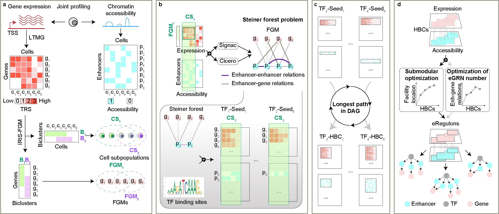

STREAM (Single-cell enhancer regulaTory netwoRk inference from gene Expression And chroMatin accessibility) is a computational method specifically designed to infer enhancer-driven gene regulatory networks (eGRNs) by analyzing transcriptome and chromatin accessibility jointly profiled from the same single cells. The method aims to improve the mapping accuracy of relationships between transcription factors (TFs), enhancers, and target genes. The algorithm employs two main strategies. First, it uses a Steiner Forest Problem (SFP) model based on a heterogeneous graph to identify enhancer-gene relations that are highly relevant in a specific context. Second, it incorporates a hybrid biclustering approach combined with submodular optimization to determine eGRNs by selecting an optimal subset from sets of co-regulated genes and co-accessible enhancers. Based on these strategies, STREAM operates through an iterative framework to find enhancer-driven regulons (eRegulons) based on both transcriptome and chromatin accessibility data. eRegulons specific to a cell type collectively compose an eGRN. It is based on several popular packages for single-cell transcriptome and chromatin accessibility analysis, particularly, Seurat, Signac, cicero, and IRIS-FGM. Picture below showed the methodological details of STREAM for eGRN inference.
